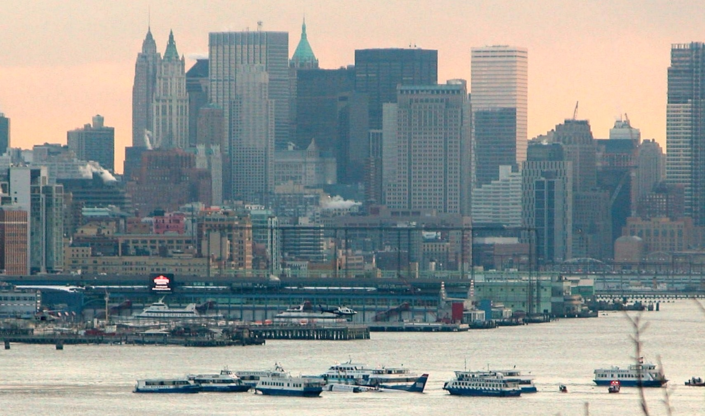
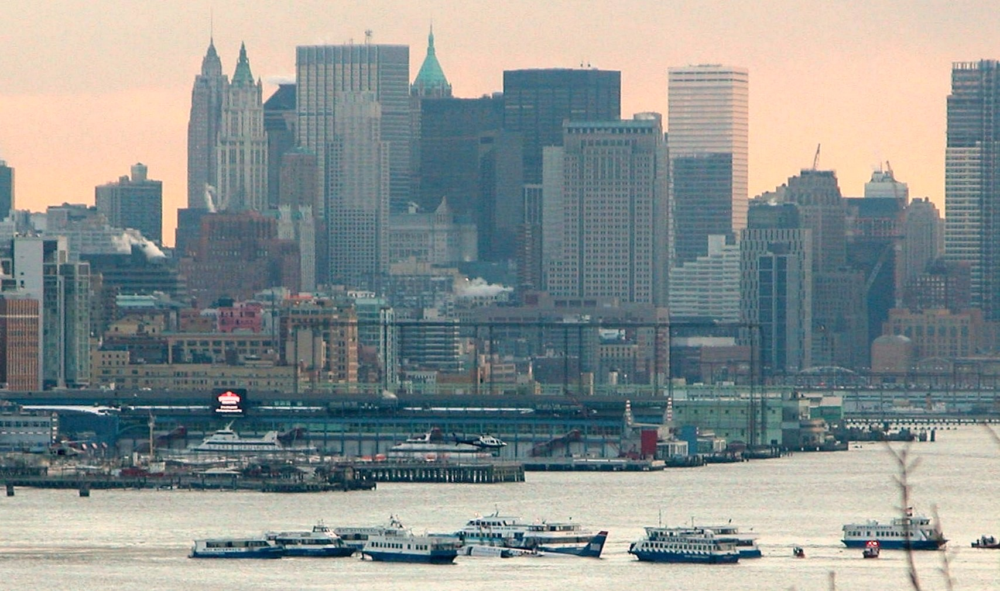

Click on the picture for a larger version (to return, you will need to press the 'Back' button)." data-link="miracle_on_the_hudson_pictures/_AvChart2_Edited4-002.jpg">
 missing in the media coverage of the accident was the footage or pictures of the actual landing. After two days or so (of most likely frantic search), low quality Coast Guard’s 24/7 security videos surfaced showing a pier with a grainy silhouette of an airliner entering the top quarter of a static frame. While very valuable, the videos were too grainy to make out the plane’s wings, engines, or windows; the unclear smudge of the aircraft exited the frame at the moment of touchdown. The other few security videos were similarly lacking. ♦ How could it be that among the thousands upon thousands of people with an iphone camera in their pockets, not a single one of them made a clear picture of the landing? Most likely those who happened to be looking at the ailing Airbus A320 did not realize what they were seeing. In fact, thanks to my aeronautical knowledge, I might have been one of the very few who knew in advance that a major event was about to happen. Consistent with such moments’ rarity in my life was the length of the “head start” I was given: 30 seconds.
missing in the media coverage of the accident was the footage or pictures of the actual landing. After two days or so (of most likely frantic search), low quality Coast Guard’s 24/7 security videos surfaced showing a pier with a grainy silhouette of an airliner entering the top quarter of a static frame. While very valuable, the videos were too grainy to make out the plane’s wings, engines, or windows; the unclear smudge of the aircraft exited the frame at the moment of touchdown. The other few security videos were similarly lacking. ♦ How could it be that among the thousands upon thousands of people with an iphone camera in their pockets, not a single one of them made a clear picture of the landing? Most likely those who happened to be looking at the ailing Airbus A320 did not realize what they were seeing. In fact, thanks to my aeronautical knowledge, I might have been one of the very few who knew in advance that a major event was about to happen. Consistent with such moments’ rarity in my life was the length of the “head start” I was given: 30 seconds. Click on the picture for a larger version (use the 'Back' button to return)." data-link="miracle_on_the_hudson_pictures/EmgLanding6_corr5.jpg">